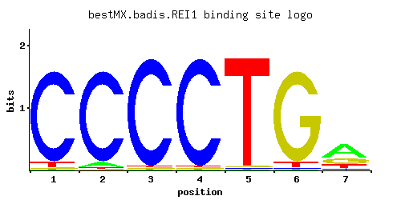

← All factors / TF RECORD
REI1
YBR267W
Cytoplasmic pre-60S factor; required for the correct recycling of shuttling factors Alb1, Arx1 and Tif6 at the end of the ribosomal large subunit biogenesis; involved in bud growth in the mitotic signaling network
01 / RECOMMENDED MATRIX
Best-performing DNA-binding model.

Fisher’s P-valueNo data
Information content12.05
Max PWM score9.95
Recommended cutoff7.46
View and copy the recommended matrices ↘
Position frequency matrix (PFM)
A | 0.01 0.05 0.01 0.01 0.01 0.01 0.56 C | 0.93 0.93 0.97 0.97 0.01 0.01 0.08 G | 0.01 0.01 0.01 0.01 0.01 0.93 0.23 T | 0.05 0.01 0.01 0.01 0.97 0.05 0.13
Position count matrix (PCM)
A | 1 5 1 1 1 1 56 C | 93 93 97 97 1 1 8 G | 1 1 1 1 1 93 23 T | 5 1 1 1 97 5 13
Position weight matrix (PWM)
A | -3.47 -1.86 -3.47 -3.47 -3.47 -3.47 0.56 C | 1.64 1.64 1.68 1.68 -2.89 -2.89 -0.81 G | -2.89 -2.89 -2.89 -2.89 -2.89 1.64 0.25 T | -1.86 -3.47 -3.47 -3.47 1.11 -1.86 -0.90
02 / COMPARATIVE BENCHMARKS
Alternative candidate matrices 1
Historical matrix candidates from the original ScerTF database. Expand a source to inspect its original logo, scores, and matrix values.
REI1Foat et. al.P = No dataView matrix ↘
03 / EXPERIMENTAL CONTEXT
Gene-level annotations and interactions.
Genes bound in ChIP-chip experiments 1 genes
No Data
Genes affected by TF deletion 1 genes
No Data
Genes supported by both experiments 1 genes
No Data